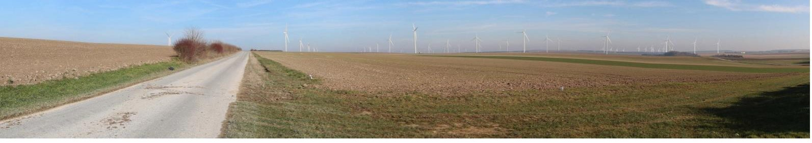

Parc éolien de Germinon
Trente éoliennes au nord du village, entre Châlons-en-Champagne et Vertus, exploitées par ENGIE Green depuis 2010 et en cours de renouvellement avec la commune.
À retenir
- 30 éoliennes de 2,5 MW, soit 75 MW, raccordées au réseau Enedis en juillet 2010.
- 133,9 GWh injectés en 2025 et 148,6 GWh en 2024, l’équivalent de la consommation de 67 500 personnes selon ENGIE Green.
- En 2024, le parc a produit 24 % de plus que ce qu’ont consommé en électricité tous les logements de l’agglomération d’Épernay.
- Renouvellement en instruction : 18 éoliennes plus puissantes remplaceront les 30 actuelles, mise en service prévue fin 2029 ou début 2030.
Source registre national des installations (ODRÉ), consommation par EPCI 2024 (ODRÉ), dossier de concertation ENGIE Green 2025.
Que produit le parc éolien de Germinon ?
Le parc a injecté 133,9 GWh sur le réseau en 2025. La production suit le vent, de 134,3 GWh en 2022 à 177,5 GWh en 2023, pour une moyenne de 148,6 GWh par an sur quatre ans.
Source registre national des installations de production d’électricité (ODRÉ), fiches au 31 décembre de chaque année, 7 installations éoliennes de Germinon.
Rapportée à la puissance maximale, la production 2025 correspond à un facteur de charge de 20,4 %, dans la fourchette de 20 à 25 % indiquée par ENGIE Green pour ce site, où le vent moyen atteint 6,27 m/s.
Source ODRÉ, consommation résidentielle d’électricité 2024 de la CA Épernay, Coteaux et Plaine de Champagne ; registre national. 148,6 ÷ 119,5 = 1,24.
Où se trouvent les 30 éoliennes ?
Les machines forment cinq lignes de six sur des terres agricoles au nord du village. La plus proche est à environ 1,7 km de la mairie. Les parcs d’autres exploitants apparaissent en gris.

Comment le parc a-t-il évolué depuis 2010 ?
Juillet 2010
Mise en service
Raccordement des 30 éoliennes au réseau Enedis les 16 et 23 juillet 2010.
2019
Contrôle acoustique
Mesures dans trois zones habitées, seuils respectés de jour comme de nuit.
Juin et juillet 2023
Accord du conseil municipal
Les élus acceptent d’étudier un renouvellement.
2023
Bridage acoustique
Deux éoliennes sont bridées.
21 mars 2024
Première permanence publique
Lancement des études biodiversité, paysage et acoustique.
Mars 2024 à février 2025
Suivi de la faune
Un cycle complet de suivi des oiseaux et des chauves-souris.
27 novembre 2025
Deuxième permanence publique
Projet final présenté, registre en mairie jusqu’au 11 décembre.
Décembre 2025
Dépôt en préfecture
Porter à connaissance déposé à la préfecture de la Marne.
2026 en cours
Instruction
Examen par les services de l’État, autorisation visée fin 2026.
Fin 2029 ou début 2030 prévisionnel
Mise en service du parc renouvelé
18 éoliennes plus puissantes remplacent les 30 actuelles.
Source registre national des installations (dates de raccordement) ; dossier de concertation et compte rendu de la permanence du 27 novembre 2025, ENGIE Green.
Que va changer le renouvellement du parc ?
Renouveler un parc, c’est remplacer des éoliennes en fin de vie par des machines plus performantes, sur le même site. À Germinon, le nombre d’éoliennes baisse de 40 % et la puissance globale augmente.
| Parc actuel | Parc renouvelé | |
|---|---|---|
| Nombre d’éoliennes | 30 | 18 |
| Puissance par éolienne | 2,5 MW | 4,5 à 5,7 MW |
| Hauteur en bout de pale | 150 m | 200 m au maximum |
| Implantation | 5 lignes de 6 | 3 lignes de 6 |
| Pales | Classiques | Dentelées, pour réduire le bruit |
Source compte rendu de la permanence publique du 27 novembre 2025, ENGIE Green.
Pour aller plus loin, lisez notre article Repowering d’un parc éolien, qu’est-ce que c’est ?
Que rapporte le parc au territoire ?
750 000 à 1 125 000 €
de recettes fiscales par an, ordre de grandeur pour 75 MW
Le ministère de la Transition écologique évalue les recettes fiscales d’un parc éolien entre 10 000 et 15 000 € par mégawatt et par an, réparties entre commune, intercommunalité et département. Le montant perçu à Germinon dépend du régime fiscal local et n’est pas publié ici.
Source ecologie.gouv.fr, « Éolien terrestre », mise à jour du 2 novembre 2026. Calcul 75 MW × 10 000 à 15 000 €.
Les propriétaires des parcelles perçoivent un loyer prévu par leur bail, sans interruption pendant le renouvellement. La maintenance est assurée depuis l’agence ENGIE Green de Châlons-en-Champagne.
Le parc fait-il du bruit ?
La réglementation encadre l’émergence, c’est-à-dire l’écart entre le bruit mesuré parc en marche et parc à l’arrêt. Quand le bruit ambiant dépasse 35 dB(A), elle ne doit pas dépasser 5 dB(A) entre 7 h et 22 h et 3 dB(A) entre 22 h et 7 h. Une éolienne ne peut pas être autorisée à moins de 500 m des habitations.
À Germinon, les mesures de 2019 respectent les seuils de jour comme de nuit et deux éoliennes sont bridées depuis 2023. Le parc renouvelé sera mesuré dans l’année suivant sa mise en service.
Source ecologie.gouv.fr ; arrêté du 26 août 2011, art. 26 ; code de l’environnement, art. L515-44 ; ENGIE Green, 2025.
Comment la faune est-elle protégée ?
De mars 2024 à février 2025, un bureau d’études indépendant a recensé 72 espèces d’oiseaux et 6 espèces de chauves-souris sur le parc. Le parc renouvelé prévoit un bridage de toutes les éoliennes pour les chauves-souris, des arrêts lors de travaux agricoles pour les oiseaux et un suivi dès la première année.
Source dossier de concertation ENGIE Green, 2025 (suivis TAUW France).
Que deviennent les éoliennes en fin de vie ?
- Fondations retirées en totalité et terre de qualité comparable remise en place.
- 90 % de la masse réutilisée ou recyclée au minimum depuis juillet 2022, 95 % pour les éoliennes autorisées sur dossier déposé après le 1er janvier 2024.
- Des garanties financières constituées dès la mise en service, 75 000 € par éolienne plus 25 000 € par mégawatt au-delà de 2 MW, soit 87 500 € pour une machine de 2,5 MW.
- 96 % de recyclabilité atteint par ENGIE Green sur ses premiers démantèlements.
Source arrêté du 26 août 2011 modifié, art. 29 et annexe I (Légifrance) ; ENGIE Green, 27 novembre 2025.
Quels autres parcs ENGIE Green près de Germinon ?
Sept autres parcs éoliens ENGIE Green tournent à moins de 30 km.
| Parc | Communes | Éoliennes | Puissance | Mise en service | Distance |
|---|---|---|---|---|---|
| Germinon | Germinon | 30 | 75 MW | 2010 | ici |
| Somme-Soude Trécon | Trécon, Villeseneux | 10 | 20,5 MW | 2014 | 6 km |
| Entre Coole et Marne | Cernon | 7 | 14,4 MW | 2017 | 13 km |
| Cernon | Cernon | 7 | 17,5 MW | 2008 | 14 km |
| Cheppes la Prairie | Cheppes-la-Prairie | 11 | 23,5 MW | 2017 | 19 km |
| Mont Grignon | Gourgançon, Semoine | 12 | 24 MW | 2010 | 24 km |
| Orme en Champagne | Maisons-en-Champagne, Loisy-sur-Marne, Pringy, Songy | 7 | 14 MW | 2016 | 25 km |
| Mont de Bézard | Gourgançon, Salon, Semoine | 20 | 40,6 MW | 2007 | 28 km |
Source carte « Dans votre région » d’ENGIE Green, relevée le 19 novembre 2026, distances à vol d’oiseau.
Quelles questions posent les riverains ?
Les éoliennes de Germinon respectent-elles les limites de bruit ?
Oui. Les mesures de 2019 respectent l’émergence maximale de 5 dB(A) le jour et 3 dB(A) la nuit, et deux éoliennes sont bridées depuis 2023. Le parc renouvelé sera mesuré dans l’année suivant sa mise en service.
Qui paie le démantèlement des éoliennes ?
L’exploitant, qui constitue des garanties financières dès la mise en service et les actualise tous les cinq ans. Le démantèlement inclut le retrait de toutes les fondations.
Combien le parc rapporte-t-il aux collectivités ?
Le ministère de la Transition écologique estime ces recettes entre 10 000 et 15 000 € par mégawatt et par an. Pour les 75 MW de Germinon, l’ordre de grandeur est de 750 000 à 1 125 000 € par an, partagés entre commune, intercommunalité et département.
Les propriétaires des terrains continuent-ils d’être payés pendant le renouvellement ?
Oui. Le nouveau bail prend effet le jour de la résiliation de l’ancien, sans année blanche.
Quand le parc renouvelé sera-t-il mis en service ?
Selon le planning publié par ENGIE Green en novembre 2025, fin 2029 ou début 2030, après instruction du dossier en 2026. Les 30 éoliennes actuelles produisent jusque-là.
Vous habitez près du parc ou vous êtes élu du secteur ?
Consultez les documents du renouvellement et donnez votre avis à l’équipe projet.
D’où viennent ces chiffres ?
- Puissance, mise en service, production : registre national des installations de production d’électricité, open data ODRÉ (RTE, Enedis), fiches 2022 à 2025.
- Parcs voisins : carte « Dans votre région » d’ENGIE Green.
- Équivalent en habitants, vent, études, calendrier : dossier de concertation et compte rendu de permanence, ENGIE Green, 2025.
- Consommation des logements : ODRÉ, consommation annuelle par EPCI 2024.
- Bruit, fiscalité, démantèlement : ecologie.gouv.fr et Légifrance.
- Position des éoliennes : OpenStreetMap (ODbL), plan dessiné sans fond de carte.
Claire Vasseur
Responsable du dialogue territorial, agence ENGIE Green de Châlons-en-Champagne
Claire accompagne les communes de la Marne et de l’Aube qui accueillent un parc ENGIE Green. Fiche relue par l’équipe d’exploitation.
Publié le 18 novembre 2026 · Mis à jour le 19 novembre 2026